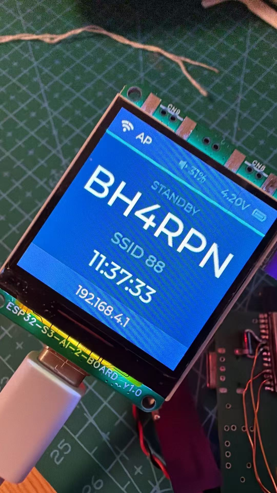
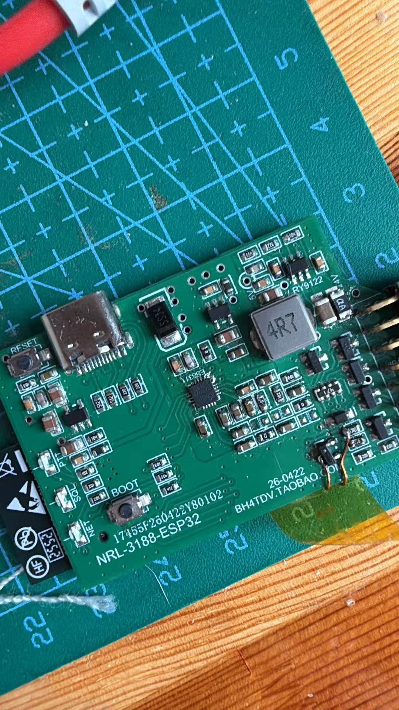
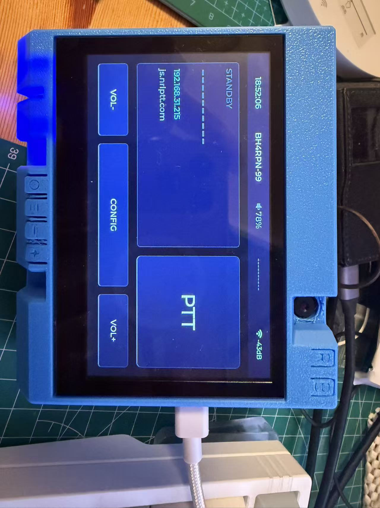
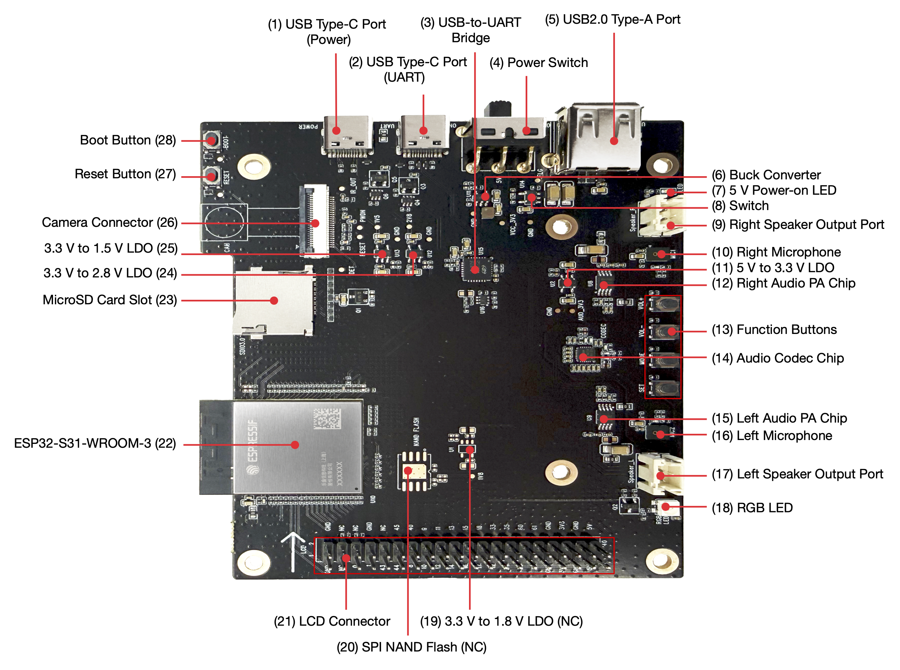

NRL ESP32 Radio Bridge
当前固件版本：0.8.5
本项目是以 ESP32-S31 为主要目标平台、兼容 ESP32-S3 板卡的 NRL 网络语音电台桥接固件，用于把电台音频、PTT、SQL、频道选择、串口透明传输和网络配置集中到一个嵌入式应用中。不同板卡分别适配 ES8311 或 ES8389 等音频编解码器，当前工程覆盖 Moto3188/NRL 硬件及 ESP32-S31 开发板。
支持的板卡
所有板卡均使用同一套 NRL 网络语音、Wi-Fi 配网门户、远程 AT 命令和 Wi-Fi OTA 固件升级功能；请选择与硬件一致的构建目标。BLE 配网适用于 ESP32-S3，ESP32-S31 使用触控配置界面（Korvo）或 SoftAP 配置门户。板级差异如下。
| 构建目标 | 板卡 / 芯片 | 板载与已适配功能 | 适用场景 |
|---|---|---|---|
gezipai | 格子派，ESP32-S3 | ES7210 麦克风 ADC + ES8311 DAC、240×240 ST7789 彩屏、电池电压检测、音量+/音量-/PTT 三按键、三色状态灯、SCI 串口 | 带小屏幕和实体 PTT 的便携式网络语音终端 |
bh4tdv | BH4TDV NRL-3188 / Moto3188 控制板，ESP32-S3 | ES8311 全双工音频、PTT/SQL/三色状态灯、三位频道选择（0–7）、SCI 串口；无板载屏幕 | 连接 3188 电台的网络桥接与频道控制 |
s31_korvo | ESP32-S31-Korvo-1，ESP32-S31 | ES8389 音频、800×480 RGB 触摸屏、ADC 按键（音量、模式、PTT）、TF 卡、USB-OTG 主机、板载 RGB 状态灯 | 带触控界面的多媒体/网络语音终端；UART1/SCI 与 UART2/GPS 默认关闭，可通过 Web/AT 启用 |
s31_function_coreboard | ESP32-S31-Function-CoreBoard-1，ESP32-S31 | ES8311 音频、YT8531 千兆以太网、USB-A 主机、WS2812 RGB 状态灯、SCI 串口；无屏幕、无实体音量/PTT 键 | 需要有线网络或 USB 存储的功能核心板方案 |
板卡实物与界面



从左至右：格子派 ESP32-S3 终端、BH4TDV NRL-3188 控制板、ESP32-S31-Korvo 触控终端界面。图片均来自本仓库的 docs/ 目录。
ESP32-S31 板卡实物


左图为 s31_korvo 使用的 ESP32-S31-Korvo-1，提供屏幕、触摸、TF 卡、USB 主机及音频外设；右图为 s31_function_coreboard 使用的 ESP32-S31-Function-CoreBoard-1，提供 RJ45 千兆以太网、USB-A 主机、板载音频和 RGB 状态灯。
注意：网页 USB 刷机仅支持 ESP32-S3 的
gezipai和bh4tdv；两块 ESP32-S31 板请使用串口烧录。Korvo 的 UART1/SCI 与 UART2/GPS 使用 DVP 摄像头接口 GPIO，默认关闭，可通过 Web/AT 启用；启用后不能同时使用并口摄像头。
扩展功能与适用范围
以下能力已在当前代码中实现；其中标注“ESP32-S31”的功能主要面向 s31_korvo，会按板卡外设自动裁剪。
- 触控 UI 与统一配置（ESP32-S31 Korvo）
- 800×480 触摸界面可显示 NRL 通话、网络与音频状态，并提供 PTT、音量、配网及媒体控制。
- 触摸界面、Wi-Fi 配置门户和 AT 命令使用统一的配置项，修改后立即保存并应用。
- 提供中文字体显示、媒体封面/元数据显示和触控俄罗斯方块小游戏。
- 本地音乐、网络收音机与定时保姆（ESP32-S31）
- 支持从 TF 卡、USB 存储和 SMB 网络共享浏览并播放 WAV、MP3、FLAC、M4A、AAC 媒体，提供播放列表、目录浏览、收藏、循环和上下曲控制。
- 可读取歌曲标题、艺术家、专辑和内嵌 JPEG/PNG 封面；NRL 下行语音开始时会优先中断本地媒体播放，保障对讲可用。
- 支持 HTTP 网络收音机及电台收藏；媒体可输出到本地扬声器、NRL 网络或两者同时输出。
- 可按设定间隔播放本地信标/音频，作为“保姆”定时播报。
- 蓝牙耳机（ESP32-S31）
- 支持经典蓝牙 HFP Audio Gateway：NRL 下行语音可播放到耳机，耳机麦克风可回传至语音链路。
- 支持耳机扫描、配对记录、重连与音量控制；音乐可选择通过 A2DP 输出到蓝牙耳机。
- ESP-NOW 脱网对讲
- 附近设备无需接入 AP 或 NRL 服务器即可进行广播式语音对讲，并可与常规 NRL 语音并行使用。
- 发送端可选 G.711 8 kHz 或 Opus 16 kHz 宽带语音；接收端自动识别两种编码，收发开关和 PTT 目标可独立配置。
- 小智 AI 语音助手（ESP32-S31）
- 兼容小智开放协议，可连接公有或自建 WebSocket 服务；支持按键开始/结束聆听、Opus 语音上行及 TTS 回放。
- NRL 视频通话（ESP32-S31 Korvo，需兼容 DVP 摄像头）
- 摄像头 JPEG 帧通过 NRL 协议分片发送，远端画面在触摸屏预览；音频继续复用现有 NRL 语音链路。
- 音频处理与链路增强
- 音频路由器将板载麦克风、NRL 下行、蓝牙耳机、ESP-NOW 与 AI 语音统一接入，并在 8 kHz / 16 kHz 语音域自动重采样和按路由调节增益。
- 提供 AEC 回声消除、AI 降噪、麦克风高通滤波、尾音抑制及可持久化的编解码器增益/均衡等配置。
- ESP32-S31 Function CoreBoard 还可使用板载 YT8531 千兆以太网；Wi-Fi 仍可作为回退连接。
- 版本 OTA 与发布服务
- OTA 管理系统已拆分到独立的
NRL-OTA仓库：Go 服务端配合 Vue 管理界面，使用 SQLite 保存按板卡、版本和发布通道（如stable/beta）划分的固件发布记录与更新说明。 - 管理后台提供板卡介绍、各板卡固件历史与变更说明、USB 刷机入口，以及设备管理面板。设备在检查更新时会上报板卡型号、固件版本、呼号、SSID、IP 和最后在线时间，后台可识别有可用更新的设备。
- 发布流程以完整刷机包为唯一来源：一次上传包含 bootloader、分区表、OTA data、应用及所需资源镜像。服务端从其中登记应用镜像作为设备 OTA 版本，并为 ESP32-S3 板同时生成 USB 网页刷机 manifest，避免两套固件来源不一致。
- 所有四个构建目标均可接入 OTA 管理系统；
gezipai/bh4tdv还可通过 Chrome/Edge 的 USB 网页刷机首次全量安装，s31_korvo/s31_function_coreboard保持串口首次烧录，后续可使用设备 OTA。 - 设备端保存 OTA 服务 URL 与设备令牌，定时或按需拉取兼容版本清单，可安装最新版本或指定历史版本；生产 OTA 下载仅接受 HTTPS。可通过本地串口 AT 命令
AT+OTAURL、AT+OTACHECK、AT+OTALIST、AT+OTA管理和执行更新。 - 管理员可通过网页登录或管理令牌维护发布；构建环境设置
OTA_SERVER_URL、OTA_UPLOAD_TOKEN等变量后，scripts/build.py会在构建成功后自动上传发布包。 - 推荐使用
scripts/publish_ota_mcp.py进行需要审核确认的正式发布。脚本通过 MCP 创建一次性上传会话，上传完整刷机包后校验状态，再显式确认发布；重复执行时会核对应用镜像大小和 SHA-256，不会重复创建相同版本。
- OTA 管理系统已拆分到独立的
$env:OTA_SERVER_URL = 'https://ota.nrlptt.com/nrlota/api'
$env:OTA_ADMIN_TOKEN = '<管理员令牌>'
python scripts/publish_ota_mcp.py --version 0.8.5 --notes 'release notes'
# 仅核验服务器上的四板发布包：
python scripts/publish_ota_mcp.py --version 0.8.5 --verify-only支持功能
- NRL UDP 网络语音桥接
- 电台 SQL 有效时，采集板载音频编解码器的麦克风音频并通过 UDP 发送到 NRL 服务器。
- 收到服务器下行语音时，拉起 PTT 输出，并通过 ES8311 或 ES8389 播放到电台或板载扬声器。
- 默认使用 G.711 A-law 8 kHz；可切换为 Opus 16 kHz 宽带语音，接收端可自动识别两种编码。
- WiFi 和服务器配置门户
- 设备启动后提供配置 AP 和 Web 页面。
- 默认配置入口 IP 为
192.168.4.1。 - 支持扫描附近 WiFi、配置 WiFi SSID/密码、服务器地址、端口、频道、呼号、音量等参数。
- 支持在
/update页面通过 WiFi 上传firmware.bin进行 OTA 刷机。 - 长按 BOOT 键 5 秒可重置网络相关配置。
- BLE 蓝牙配置（ESP32-S3）
- 设备启动后广播 BLE 设备名
NRL-ESP32-CFG。 - 使用 Nordic UART 风格的 BLE 服务，通过手机或电脑 BLE 工具写入文本命令。
- 支持配置 WiFi SSID/密码、服务器地址、端口、频道和呼号。
- 配置保存后会自动重启 WiFi/UDP 连接。
- ESP32-S31 因使用经典蓝牙耳机栈，不启用该 BLE 配网服务；请使用触控界面或 Wi-Fi 配置门户。
- 设备启动后广播 BLE 设备名
- 电台控制 IO
- PTT 输出控制电台发射。
- SQL1/SQL2 输入检测电台接收状态。
- BH4TDV 提供三位频道选择输出，支持
0..7共 8 个频道。 - 状态灯按板卡提供三色 LED 或 WS2812 RGB 状态提示。
- PTT 按键发射控制（格子派）
- 短按 PTT 键开启发射，再短按一次关闭发射（锁定式）。
- 长按 PTT 键为即时发射（按住发射），松开按键立即停止发送。
- 发射超时：发射持续超过设定时间后自动强制关闭（短按锁定和长按均受此限制）。
- 超时时间默认 5 分钟，范围
5..3600秒，可通过AT+PTT_TIMEOUT或 Web 配置页调节。
- 板载音频编解码与语音处理
- ESP32-S3 / Function CoreBoard 使用 ES8311，Korvo 使用 ES8389；格子派另配 ES7210 麦克风 ADC。
- 支持麦克风输入增益、线路输出音量、HP Drive 输出模式及接收模式下的下行播放队列。
- 尾音消除（防回波激发）
- ESP32 把网络语音播放给电台结束后，会在一段时间内丢弃电台返回的语音，不再转发到网络。
- 用于抑制电台所接中继台的应答回波，避免网络上 2 台以上设备相互激发。
- 默认
0（不抑制），范围0..5000毫秒，可通过AT+TAIL_SUPPRESS或 Web 配置页调节。
- 屏幕显示（格子派）
- 板载 ST7789 240x240 SPI 彩屏，使用 LVGL 渲染，简洁现代科技风格深色界面。
- 中间主区域显示呼号（接收语音时为呼叫方，待机/发送时为本机配置的呼号），呼号下方是较小的 SSID，再下面一行是当前时间。
- 顶部状态栏左侧显示 WiFi 信号强度（dB 值），右侧显示电池电压。
- 底部显示设备获取到的局域网 IP 地址；WiFi 连接失败进入配网状态时，改为显示配置热点的 IP 地址。
- 时间通过 NTP 同步（CST-8 时区），未联网时显示
--:--:--。
- SCI 串口透明传输
- 支持通过 NRL 数据包转发 SCI 串口数据。
- 默认 SCI 配置为
9600,8,N,1。 - SCI 参数可通过 AT 命令更新。
- 远程 AT 命令配置
- 支持查询和设置频道、服务器、呼号、SSID、音量、SCI 参数等。
- 支持远程重启命令。
- 常用命令包括
AT+CH、AT+D_IP、AT+D_PORT、AT+CALL、AT+SSID、AT+PTT_TIMEOUT、AT+TAIL_SUPPRESS、AT+MIC_GAIN、AT+MIC_PCM_GAIN（0.1–5.0）、AT+VOLUME、AT+HP_DRIVE、AT+SCI、AT+REBOOT。
- 参数持久化
- 电台配置保存到共享 Flash/EEPROM 区域。
- 首次启动会写入默认配置，之后从持久化配置恢复。
默认配置
默认参数定义在 src/lib/nrl_audio_config.h：
| 项目 | 默认值 |
|---|---|
| WiFi SSID | NRL-ESP32 |
| WiFi 密码 | 12345678 |
| 服务器地址 | 101.133.166.204 |
| 服务器端口 | 60050 |
| 本地端口 | 60050 |
| 呼号 | NOCALL |
| 呼号 SSID | 0 |
| 设备模式 | 22 |
| 下行语音超时 | 120 ms |
| 心跳间隔 | 2000 ms |
BLE 配置命令
可使用 nRF Connect、LightBlue 等 BLE 工具连接 NRL-ESP32-CFG。
| 项目 | UUID |
|---|---|
| Service | 6e400001-b5a3-f393-e0a9-e50e24dcca9e |
| RX Write | 6e400002-b5a3-f393-e0a9-e50e24dcca9e |
| TX Notify | 6e400003-b5a3-f393-e0a9-e50e24dcca9e |
向 RX 特征写入以换行结尾的文本命令：
HELP
GET
SET WIFI_SSID=your_ssid
SET WIFI_PASS=your_password
SET SERVER_HOST=101.133.166.204
SET SERVER_PORT=60050
SET CHANNEL=0
SET CALLSIGN=NOCALL
SAVE
APPLY
RESET_NET
REBOOTSET 命令会立即保存配置；如果改动了 WiFi 或服务器参数，会自动让网络桥重新连接。GET 会通过 TX Notify 返回当前主要配置。
主要管脚
管脚集中定义在 src/app/driver/board_pins.h。
| 功能 | GPIO |
|---|---|
| PTT 输出 | 8 |
| SQL1 输入 | 17 |
| SQL2 输入 | 18 |
| 网络/心跳状态灯 | 1 |
| SQL 状态灯 | 2 |
| PTT 红灯 | 42 |
| 频道 bit0 | 40 |
| 频道 bit1 | 39 |
| 频道 bit2 | 38 |
| SCI RX | 6 |
| SCI TX | 7 |
| I2C SCL | 14 |
| I2C SDA | 21 |
| PA EN | 46 |
| I2S MCLK | 9 |
| I2S BCLK | 10 |
| I2S DOUT | 13 |
| I2S LRCLK | 12 |
| I2S DIN | 11 |
| BOOT 按键 | 0 |
频道输出为三位二进制编码，例如频道 0 输出 000，频道 7 输出 111。
屏幕显示（格子派）
格子派板载一块 ST7789 240x240 SPI 彩屏，管脚与小智（xiaozhi）格子派板一致。屏幕驱动位于 src/app/driver/display.cpp，面板用 IDF 内置的 esp_lcd ST7789 驱动，界面用 LVGL 渲染。
| 功能 | GPIO |
|---|---|
| LCD SCLK | 7 |
| LCD MOSI | 6 |
| LCD DC | 16 |
| LCD CS | 15 |
| LCD RST | 5 |
| LCD 背光 | 4 |
| 电池电压 ADC | 3（ADC1 通道 2，1:2 分压） |
由于 LCD 占用 GPIO 4-7/15/16，格子派的 SCI 串口已从默认的 GPIO 4/5 移到 GPIO 9（RX）/ 8（TX），以避让 LCD 背光（4）与复位（5）。BH4TDV 板没有屏幕，SCI 仍为 GPIO 4/5。
界面布局：
- 顶部状态栏：左侧 WiFi 信号强度（dB），中间输出音量（百分比），右侧电池电压。
- 中间主区域：呼号上方的英文状态标题、呼号（大号字体）、SSID（小号）、当前时间。接收语音时显示呼叫方的呼号/SSID，待机或发送时显示本机配置的呼号/SSID（仅语音包参与判断，心跳包不影响）。
- 状态标题随收发实时变化：
STANDBY（待机）、RECEIVING（接收中）、TRANSMITTING（发送中）、FULL DUPLEX（同时收发）。 - 底部：局域网 IP；进入配网（AP）状态时显示配置热点 IP（琥珀色）；发送或接收语音时改为显示 NRL 服务器 host —— 发送为红色、接收为青色，显示配置的 host 字符串而非解析后的 IP。
LVGL 以本地组件形式放在 components/lvgl。LVGL 与 esp_lcd 的对接（缓冲区、刷新、tick）直接写在显示驱动中；相关 Kconfig 只存在于带屏板卡自己的 defaults 文件中，无屏板卡不加载 LVGL。
启动流程
固件入口在 src/app/main.cpp：
- 初始化串口日志。
- 初始化外部电台配置和频道选择 IO。
- 应用已保存的音频配置。
- 初始化 PTT、SQL 和状态灯 IO。
- 初始化屏幕（带屏板卡：格子派 ST7789 或 S31 Korvo RGB 触控屏）。
- 启动 WiFi 配置门户。
- 初始化 ES8311 音频编解码器并进入接收模式。
- 启动 NRL 音频桥接任务。
收到网络下行语音时，固件会拉高 PTT 并开始向电台输出音频；语音包超时后释放 PTT。
构建和烧录
工程使用原生 ESP-IDF（≥6.1，含 ESP32-S31 支持），不再使用 PlatformIO。共有四块板： gezipai（格子派，ESP32-S3）、bh4tdv（BH4TDV 3188，ESP32-S3）、s31_korvo （ESP32-S31-Korvo-1，ESP32-S31），以及 s31_function_coreboard （ESP32-S31-Function-CoreBoard-1，YT8531 以太网，无屏幕）。
首次需安装 ESP-IDF 工具链（一次性）：
C:\esp\esp-idf\install.ps1 esp32s3,esp32s31之后每开一个终端，先激活 ESP-IDF 环境：
C:\esp\esp-idf\export.ps1 # Linux/macOS 用: . export.sh用构建助手按板名编译/烧录/监视（第一个参数是板名，其余原样透传给 idf.py）：
python scripts/build.py gezipai build # 编译格子派
python scripts/build.py bh4tdv build # 编译 BH4TDV
python scripts/build.py s31_korvo flash monitor -p COM5 # S31: 编译+烧录+监视
python scripts/build.py s31_function_coreboard build # S31 功能核心板
python scripts/build.py gezipai menuconfig # 修改配置每块板有独立的 build/<board>/ 目录、sdkconfig 和一份完整的 sdkconfig.<board>.defaults，可随意切换且互不叠加配置。NRL_BOARD 由脚本通过 -DNRL_BOARD_ID 传入。
GitHub Actions 会在每次 push、pull request 或手动触发时，用官方 ESP-IDF 镜像原生构建 四块板，并上传各板的 firmware / partition-table / bootloader 作为构建产物， 打 tag 时发布到 Release。
固件刷机
USB 网页刷机
工程提供 web-flasher/ 页面，适合首次烧录或恢复设备。它会写入 bootloader、分区表、OTA data、应用固件和 esp-sr 模型。
仅支持两块 ESP32-S3 板（
gezipai/bh4tdv）。ESP32-S31 因 esptool-js 不支持，
s31_korvo和s31_function_coreboard只能串口烧录。
先编译这两块板，再打包页面（stage_web_flasher.py 从 build/<board>/flasher_args.json 读取各镜像的偏移并生成 esp-web-tools manifest）：
python scripts/build.py gezipai build
python scripts/build.py bh4tdv build
python scripts/stage_web_flasher.py
python -m http.server 8000 -d web-flasher然后用 Chrome 或 Edge 打开 http://localhost:8000，通过 USB 串口安装固件。 （CI 也会在 web-flasher 任务里自动打包，打 tag 时把 web-flasher-<版本>.zip 发布到 Release。）
WiFi 网页刷机
设备已经运行双 OTA 分区表后，可通过配置门户刷机：
- 连接设备配置 AP，或访问设备在局域网中的 IP。
- 打开
http://192.168.4.1/update，或从配置首页点击Firmware update。 - 上传对应板子的应用固件
build/<板名>/nrl-esp32.bin（例如格子派build/gezipai/nrl-esp32.bin、BH4TDVbuild/bh4tdv/nrl-esp32.bin、Korvobuild/s31_korvo/nrl-esp32.bin、功能核心板build/s31_function_coreboard/nrl-esp32.bin）。 - 上传完成后设备会自动重启到新固件。
注意：WiFi OTA 需要 part.csv 中的 app0/app1 双 OTA 分区布局。旧分区布局设备应先用 USB 网页刷机或串口刷机更新分区表。
目录结构
src/app/main.cpp 固件入口
src/app/driver/board_pins.h 板级管脚定义
src/app/driver/external_radio.* 电台配置、频道和持久化
src/app/driver/status_io.* PTT、SQL、状态灯
src/app/driver/es8311.* ES8311/I2S 音频驱动
src/app/driver/display.* ST7789 LCD + LVGL 界面（仅格子派）
src/app/driver/sci_serial.* SCI 串口
src/lib/nrl_audio_bridge.* NRL UDP 音频桥接
src/lib/nrl_at_commands.* 远程 AT 命令
src/lib/ble_config.* BLE 蓝牙配置
src/lib/wifi_config_portal.* Web 配置门户
src/lib/nrl_audio_config.h 默认网络和音频参数
web-flasher/ USB 网页刷机页面
scripts/ 构建辅助脚本许可证
本项目使用 MIT License，详见 LICENSE。